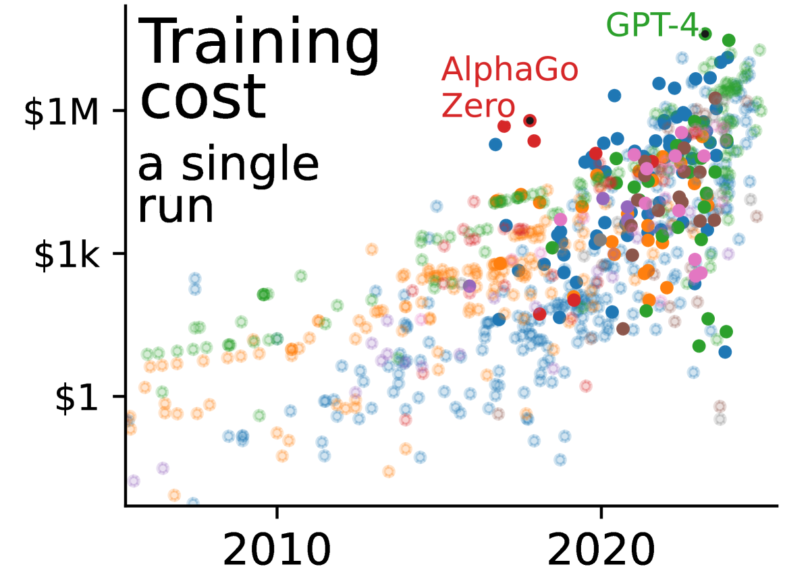
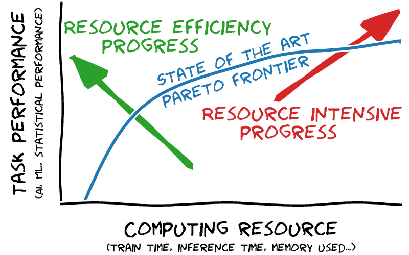

AI is everywhere. Can you see it here?
Note
Some highlights about my work in 2025: progress on tabular-learning stands out, a publication on unpacking trade-off and consequences of scale in AI, and of course progress on the open-source data-science and machine learning stack.
As 2026 starts, I’m looking back on 2025. It was all about AI, with research in the soda team on tabular machine learning stimulating better software.
Highlights
Beyond maths: Unpacking the scale narrative in AI
Plotting the increase of the scale of notable AI systems in the last years reveals a staggering explosion. AI’s size has been growing super exponentially on a variety of dimensions: training compute, training cost (figure below), inference cost, amount of data used. Studying the wording used in pivotal publications as well as company communications shows that it anchors AI success in this growth, thus settings implicit social norms around scale. But systematic analysis of benchmark results show that scale does not always bring benefit. The narrative of scale is simplified and leaves aside many important ingredients of success of AI systems. In addition, the race for scale comes with planetary and societal consequences, which we study and document. Ever-increasing inference costs threaten economic and electricity sustainability. An unstoppable appetite for training data leads to fitting models on enormous datasets that elude quality control, engulfing undesirable facets of internet (including child pornography) or eroding privacy. The race for scale has financial consequences, benefiting above all actors of compute, but also structuring an ecosystem where cash-rich and GPU-rich actors have leverage on priorities, industrial or academic. These actors sometimes have circular investments strategies: funding third parties that will spend all this funding in compute, which can fuel an investment bubble in AI.

Evolution of the training cost (in dollars) of notable AI systems across the years
We conclude our study, published at FAccT, by underlining that academic research has a central role to play in these dynamics and must shape a healthy and grounded narrative. We recommend to:
- pursue basic AI research of interest independent of scale, eg uncertainty quantification, causality…
- hold responsible norms, in particular avoiding asking for compute increase when editing or reviewing,
- always publish measures of compute to document the tradeoffs.

We need to document and explore the tradeoffs
In addition, I personally want to push those tradeoffs in the direction of resource efficient progress, and not only resource intensive progress (as illustrated on the figure alongside), which is the easy route to task performance, but not the one that brings most value.
Tabular-learning research
TabICL: open-source table foundation model
Recent tabular-learning models have been bringing better performance. A poster example is that of the TabPFN series of models, that rely on pretrained transformers to bring excellent performance. However, the quadratic complexity of the transformers is a bottleneck. I do fear that the agenda of fancy tabular learning is leading us into a race for scale again.
With the TabICL model we strives to decrease this computational cost. We showed that a multi-stage architecture can build a pre-trained in-context predictor where the separation of states decreases the quadratic cost. The model can be pretrained on larger datasets, and thus results in the best performer in settings of larger tables. The model is faster than alternatives, in particular when using a CPU rather than a GPU. In addition, we released in open source all the code, including the pretraining.
TabICL gives a table foundation model that is easy to use on modest or big hardware and that can be easily customized.
Retrieve merge predict: tradeoffs of predictions from data lakes
A full data-science pipeline must often assemble data across multiple source tables:
Alice is working on a base table that contains information about movies. She has also access to a data lake, or a collection of other tables on all sorts of subjects. She wants to predict the ranking of a movie based on as much information as possible. She would like to extract information from the data lake to the performance of her model.
The challenge is that the information of interest is mixed with a huge amount of unrelated data. Thus, Alice’s problem is: “how to find tables that are relevant to my problem? how to combine them with the base table?”
When the user is faced with a complex data lake, many tables and little explicit link between them, it is difficult to find the best assembly for a given machine-learning task. This problem requires not only finding which table must be joined in the main table of interest –a table retrieval problem–, but also how to aggregate multiple records when tables are linked through a many-to-one relation. While table retrieval is a classic problem of the data management literature, it had been understudied in the case of supervised machine learning. We assembled a systematic –and open– benchmark with data lakes emph{and} supervised-learning tasks (publication, benchmark material ).
We found that supervised learning does change the picture compared to classic table-retrieval settings in that for a fixed compute budget, it is worth avoiding fancy retrieval methods, which can be very computationally costly, and rather using better supervised learning methods, which can be comparatively less expensive while being able to extract the relevant information from a noisy retrieval.

A schema of the pipeline
The pipeline that we studied here is one that is broader than the typical machine-learning modeling step. In my experience, data-science applications are often much more complex than mere tabular learning, and for these reason, we develop the skrub software, described below.
Growing the machine learning and data science stack
Skrub: machine learning with tables
Skrub is a recent library to blend machine learning with data-frame computing. In 2025, we have ironed existing features to make them more performant and really easy to use. For instance the TableVectorizer is incredibly useful to build tabular machine-learning pipelines. But we have also added exciting new features:
- The ApplyToCols is an object that can use skrub’s powerful selectors to apply transforms to some columns but not others. I find myself using it all the time.
- DataOps are an incredibly powerful way of blending dataframe transformation and scikit-learn fit/transform/predict API, to build complete machine learning pipeline across multiple tables. The benefit is that, unlike standard data wrangling code, they can be applied to new data, cross-validated, or any component of the pipeline can be tuned to maximize a prediction score. We even have added optuna support for this tuning.
Fundamental progress in scikit-learn
What strikes me in the 2025 releases of scikit-learn is that we have been making progress on fundamental improvements to the core features:
- Faster linear models and tree based model due to better algorithms (which, in certain cases give massive speedups).
- Ramping up GPU support: we are progressively adding to scikit-learn a compute backend that enable GPU computing (an intro here)
- Free-threaded: we now support the “free-threaded” version of Python, which removes a central lock and opens the door to heavily-multithreaded parallel computing. More of the ecosystem needs to support Python free-threaded for it to be widely used, but I am hoping that in the mid-term we’ll see great improvements to parallel computing.
Exciting times :)